| Name | Image | Rarity | Type | Cost | Description |
|---|
| Choose Blue | 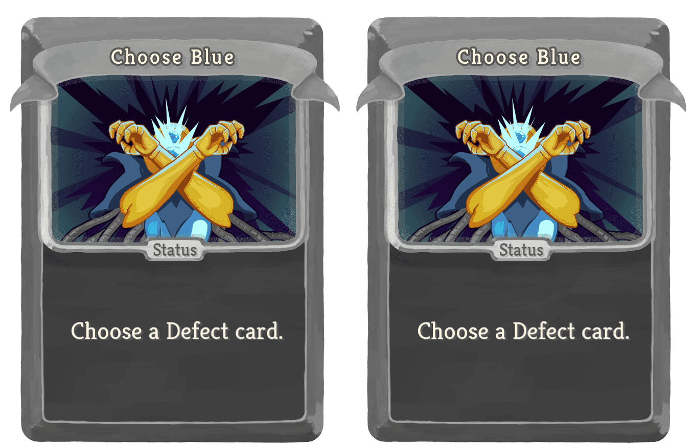 | Special | Status | | Choose a Defect card. |
| Choose Green |  | Special | Status | | Choose a Silent card. |
| Choose Purple |  | Special | Status | | Choose a Watcher card. |
| Choose Red |  | Special | Status | | Choose an Ironclad card. |
| Jealousy |  | Basic | Curse | 1 | Soulbound dregsmod:Seal a random Curse. |
| Catastrophe |  | Special | Curse | 3 | Ethereal Apply 20 dregsmod:Blighted to ALL enemies. |
| Doom | 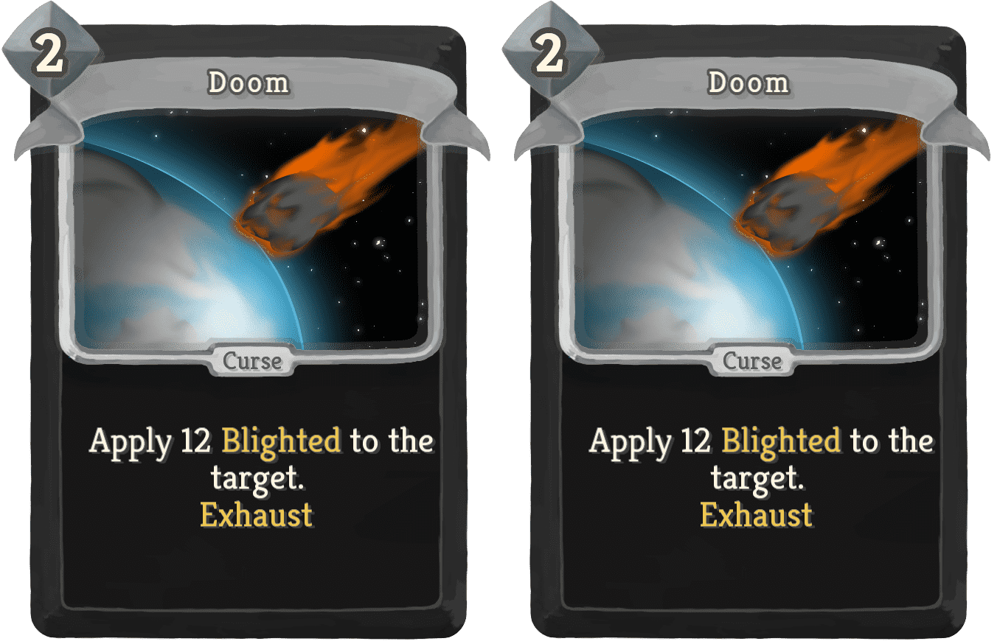 | Special | Curse | 2 | Apply 12 dregsmod:Blighted to the target. Exhaust |
| Gloom | 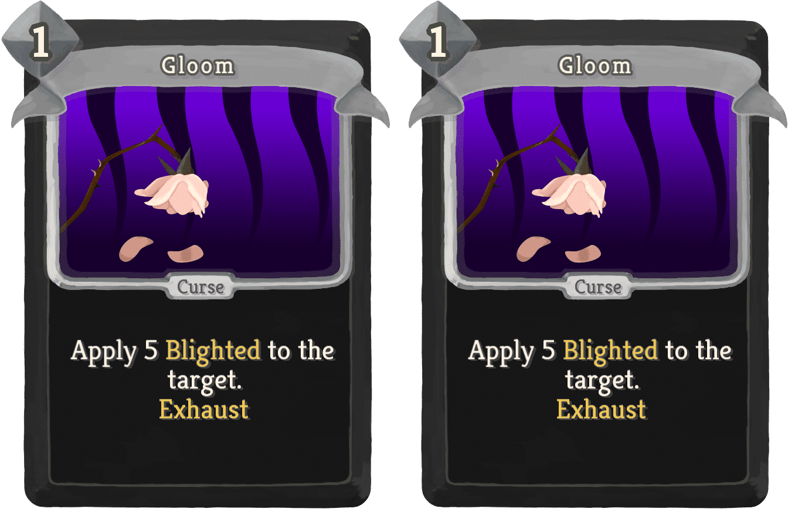 | Special | Curse | 1 | Apply 5 dregsmod:Blighted to the target. Exhaust |
| Cower |  | Curse | Curse | | Retain When Retained, Your enemies heal 5 HP. dregsmod:Cleanse: Defeat 5 enemies |
| Death | 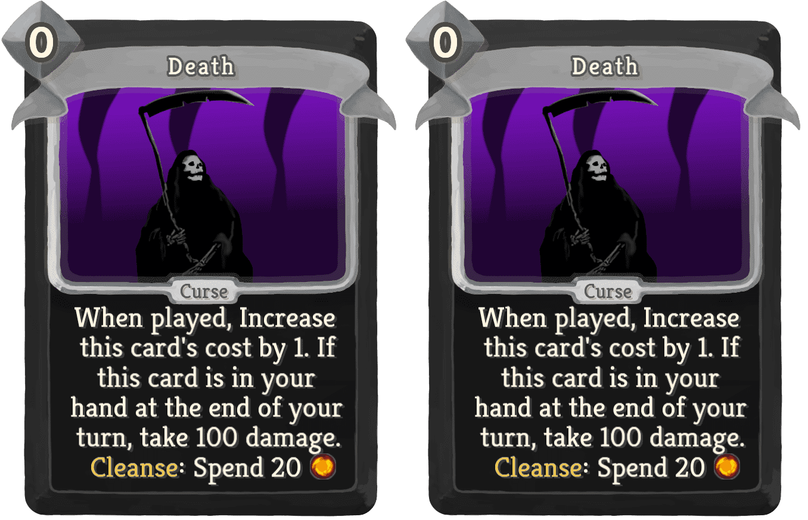 | Curse | Curse | 0 | When played, Increase this card's cost by 1. If this card is in your hand at the end of your turn, take 100 damage. dregsmod:Cleanse: Spend 20 [E] |
| Dread | 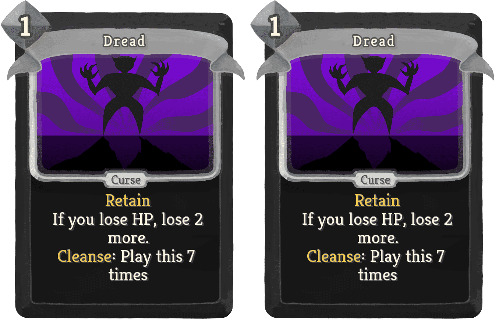 | Curse | Curse | 1 | Retain If you lose HP, lose 2 more. dregsmod:Cleanse: Play this 7 times |
| Envy |  | Curse | Curse | | Retain When you discard this card, discard another random card as well. dregsmod:Cleanse: Discard this 6 times |
| Greed |  | Curse | Curse | | When drawn, lose 5 Gold. dregsmod:Cleanse: Draw this 8 times |
| Infection | 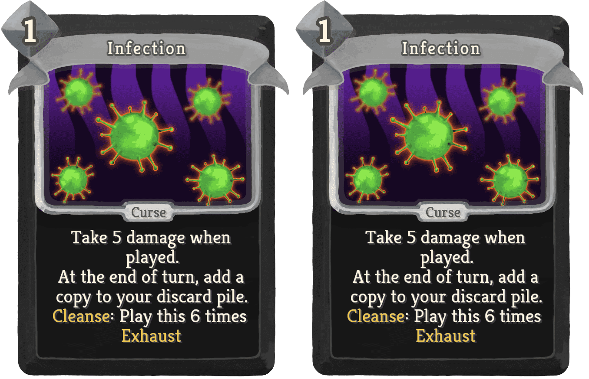 | Curse | Curse | 1 | Take 5 damage when played. At the end of turn, add a copy to your discard pile. dregsmod:Cleanse: Play this 6 times Exhaust |
| Inquisition | 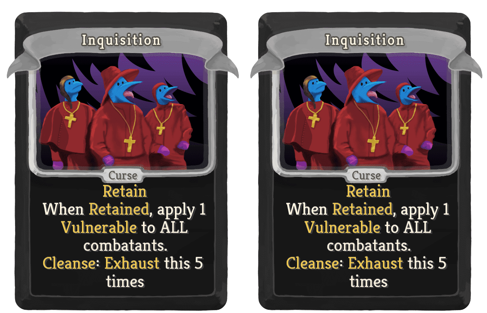 | Curse | Curse | | Retain When Retained, apply 1 Vulnerable to ALL combatants. dregsmod:Cleanse: Exhaust this 5 times |
| Spire |  | Curse | Curse | | Innate Retain dregsmod:Cleanse: Play 50 cards. |
| Weak Point | 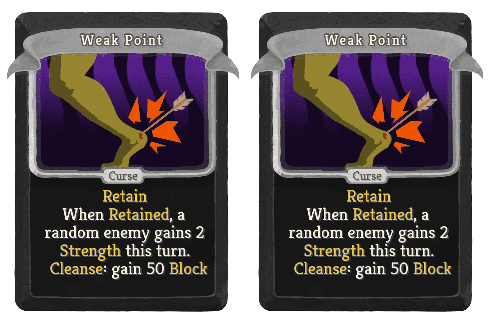 | Curse | Curse | | Retain When Retained, a random enemy gains 2 Strength this turn. dregsmod:Cleanse: gain 50 Block |
| Adaptability | 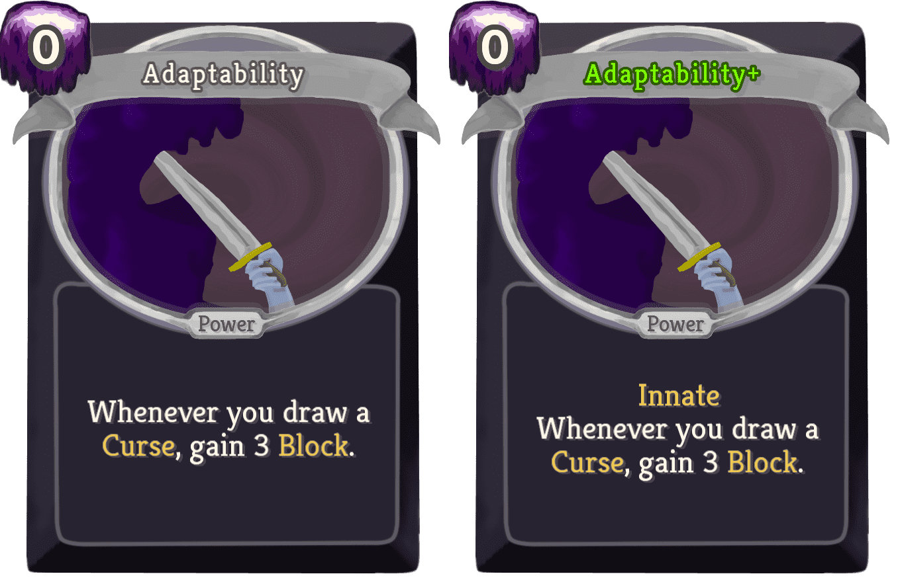 | Basic | Power | 0 | (Innate)Whenever you draw a Curse, gain 3 Block. |
| Defend |  | Basic | Skill | 1 | Gain 5 (8) Block. |
| Lash Out |  | Basic | Attack | 1 | Discard all Curses in your hand. Deal 8 (11) damage. Increase damage by 2 (3) for each Curse discarded. |
| Strike | 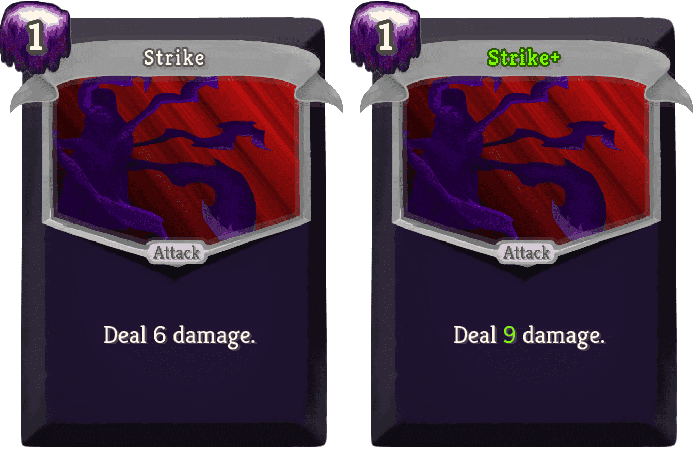 | Basic | Attack | 1 | Deal 6 (9) damage. |
| Amethyst Shard |  | Common | Skill | 0 | Choose 1 of 3 common Purple cards and add it to your hand. (It costs 0 this turn.) Exhaust |
| Chomp |  | Common | Attack | 1 | Deal 9 (12) damage. dregsmod:Seal a card. |
| Curate |  | Common | Skill | 0 | Draw 1 (2) card(s). Discard a card. If you discard a Curse, gain 5 Block. |
| Cursed Needle |  | Common | Attack | 1 | Deal 8 (11) damage. Apply 3 (6) dregsmod:Blighted. |
| Emerald Shard |  | Common | Skill | 0 | Choose 1 of 3 common Green cards and add it to your hand. (It costs 0 this turn.) Exhaust |
| Gash | 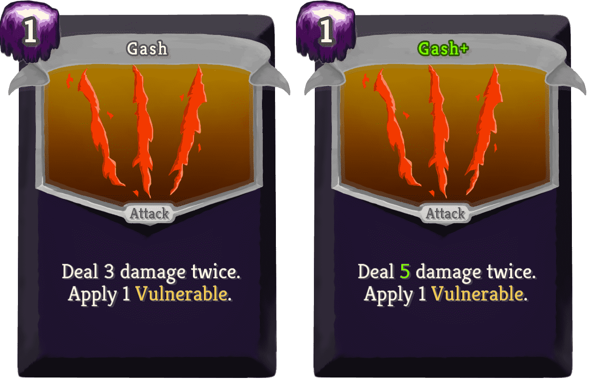 | Common | Attack | 1 | Deal 3 (5) damage twice. Apply 1 Vulnerable. |
| Icy Touch | 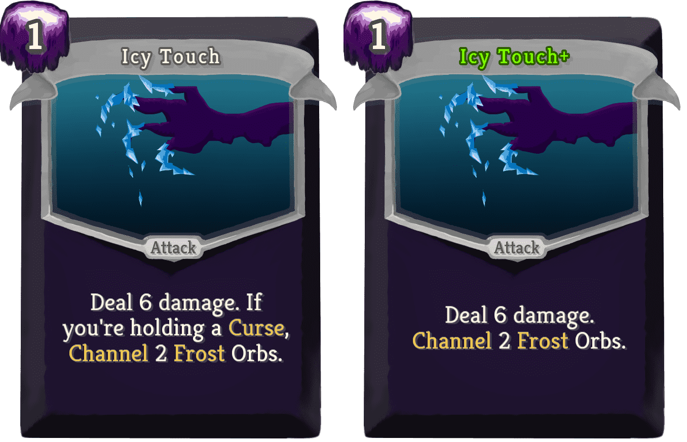 | Common | Attack | 1 | Deal 6 damage. If you're holding a Curse, (not If you're holding a Curse,)Channel 2 Frost Orbs. |
| Improvise |  | Common | Attack | 0 | Deal 4 (6) damage. Channel a dregsmod:Sludge Orb |
| Misery | 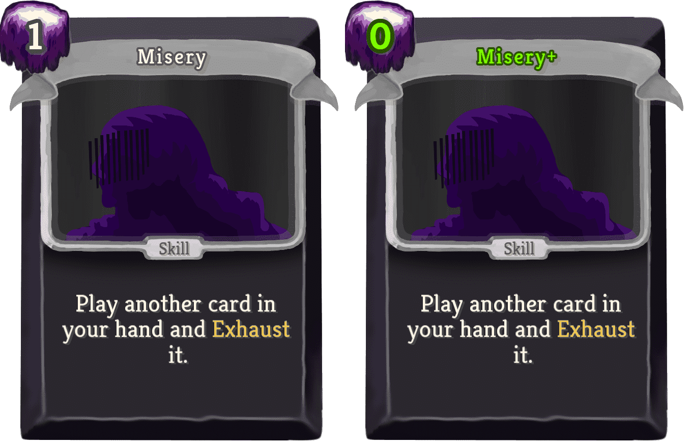 | Common | Skill | 1 (0) | Play another card in your hand and Exhaust it. |
| Payback |  | Common | Attack | 2 | Deal 8 (10) damage. Increase the damage by 6 (8) for each Curse in your hand. |
| Plague |  | Common | Skill | | Unplayable While this card is dregsmod:Sealed, deal 5 (8) damage to all enemies each turn. |
| Quarantine |  | Common | Skill | 1 | Draw 2 (3) cards. dregsmod:Seal a card. |
| Ritual Jar |  | Common | Skill | 1 | Apply 5 (10) dregsmod:Blighted. Increase the power of ALL Ritual Jar cards by 3 this combat. |
| Ruby Shard |  | Common | Skill | 0 | Choose 1 of 3 common Red cards and add it to your hand. (It costs 0 this turn.) Exhaust |
| Ruin |  | Common | Attack | 2 | Deal 12 (16) damage. If the target is dregsmod:Blighted, damage it again. |
| Sapphire Shard | 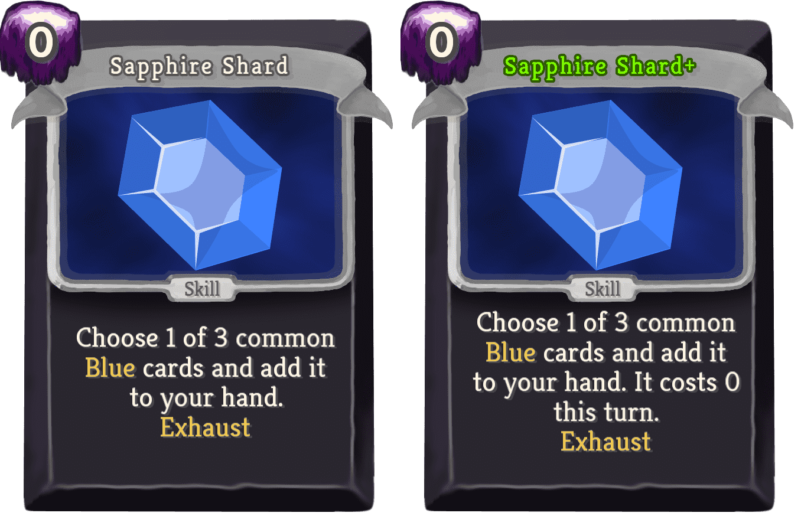 | Common | Skill | 0 | Choose 1 of 3 common Blue cards and add it to your hand. (It costs 0 this turn.) Exhaust |
| Shadow Dagger |  | Common | Attack | 1 | Deal 4 damage. Add a (2) Shiv(s) to your hand. |
| Shadow Shield |  | Common | Skill | 0 | Gain 1 Block for each other card in your hand (, and each dregsmod:Sealed card). (Gain 1 Block) |
| Shallow Grave |  | Common | Skill | 1 | Gain 4 (7) Block. Gain 2 (3) dregsmod:Sturdiness. |
| Sharp Shadows | 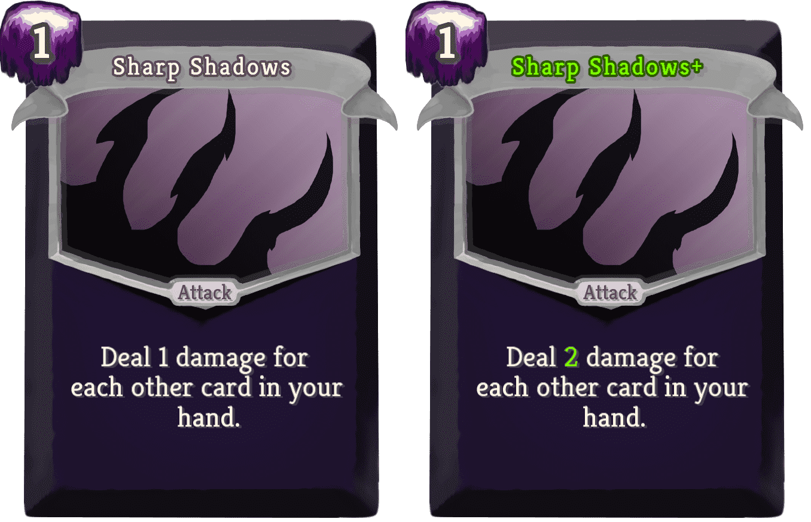 | Common | Attack | 1 | Deal 1 (2) damage for each other card in your hand. |
| Ascetic | 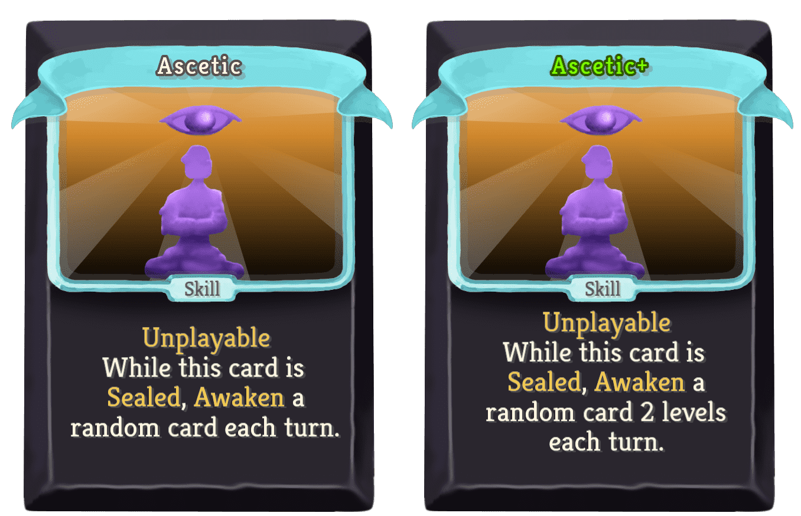 | Uncommon | Skill | | Unplayable While this card is dregsmod:Sealed, dregsmod:Awaken a random card (2 levels) each turn. |
| Asylum | 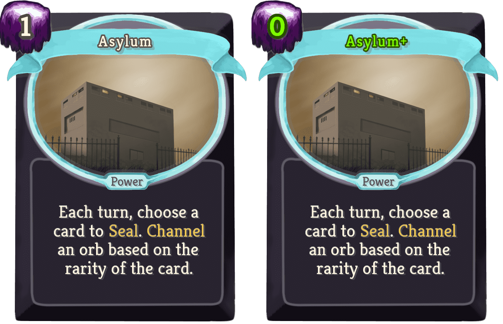 | Uncommon | Power | 1 (0) | Each turn, choose a card to dregsmod:Seal. Channel an orb based on the rarity of the card. |
| Brush Off | 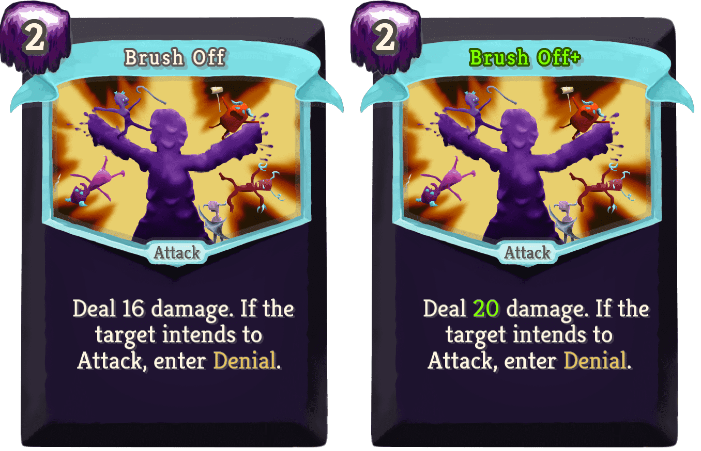 | Uncommon | Attack | 2 | Deal 16 (20) damage. If the target intends to Attack, enter dregsmod:Denial. |
| Brutal Swing |  | Uncommon | Attack | 1 | Deal 10 (13) damage. Enter dregsmod:Acceptance. If you're holding a Curse, gain [E] and draw a card. |
| Clarity |  | Uncommon | Skill | 1 (0) | Enter dregsmod:Acceptance. Conserve your energy this turn. |
| Cursed Scroll | 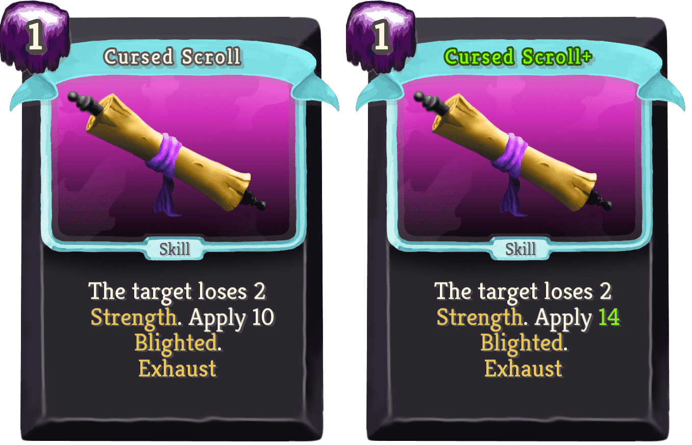 | Uncommon | Skill | 1 | The target loses 2 Strength. Apply 10 (14) dregsmod:Blighted. Exhaust |
| Defiance |  | Uncommon | Power | 2 | Whenever you are inflicted with Frail or Vulnerable, gain 1 dregsmod:Might (and dregsmod:Awaken a random card). |
| Embrace Darkness | 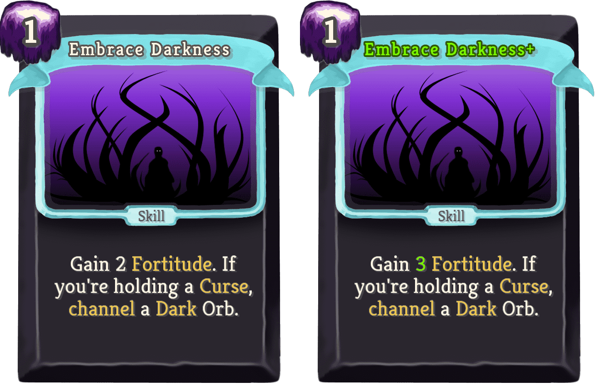 | Uncommon | Skill | 1 | Gain 2 (3) dregsmod:Fortitude. If you're holding a Curse, channel a Dark Orb. |
| Excess | 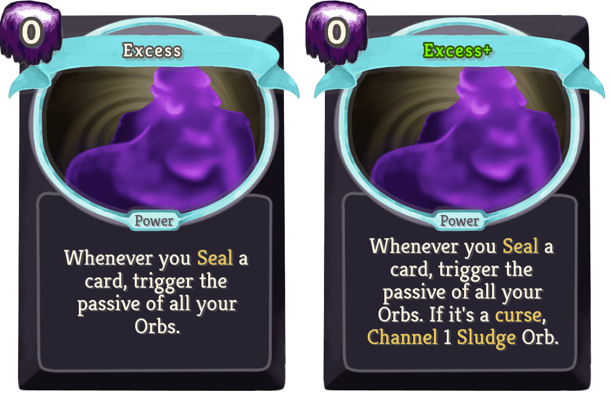 | Uncommon | Power | 0 | Whenever you dregsmod:Seal a card, trigger the passive of all your Orbs. (If it's a curse, Channel 1 dregsmod:Sludge Orb.) |
| Fear |  | Uncommon | Attack | 0 | Deal 7 (10) damage to ALL enemies. dregsmod:Seal this card. |
| Gem Heart | 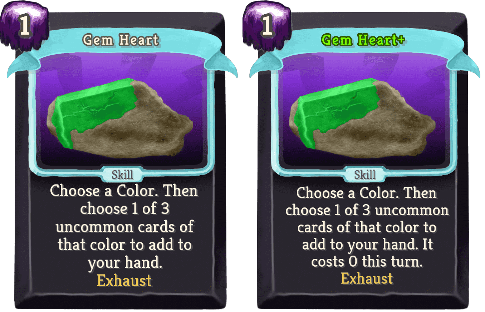 | Uncommon | Skill | 1 | Choose a Color. Then choose 1 of 3 uncommon cards of that color to add to your hand. (It costs 0 this turn.) Exhaust |
| Glare |  | Uncommon | Skill | 1 | Gain 9 (12) Block. If you're holding a Curse, draw a card. |
| Guardian | 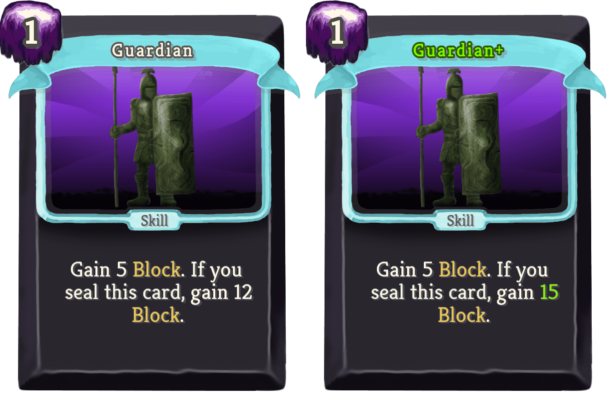 | Uncommon | Skill | 1 | Gain 5 Block. If you seal this card, gain 12 (15) Block. |
| Hard Luck |  | Uncommon | Skill | 6 | (Draw a card.)Gain 13 Block. Costs 1 less for each Curse in your deck. |
| Insight | 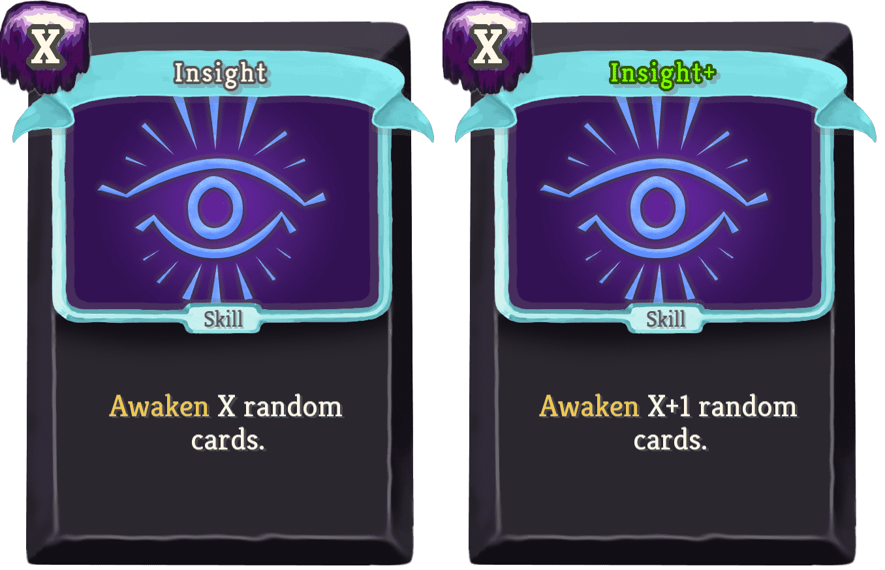 | Uncommon | Skill | X | dregsmod:Awaken X (X+1) random cards. |
| Laser Focus | 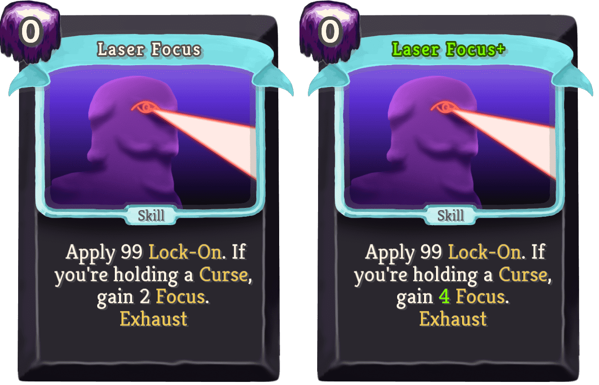 | Uncommon | Skill | 0 | Apply 99 Lock-On. If you're holding a Curse, gain 2 (4) Focus. Exhaust |
| Lost Potential | 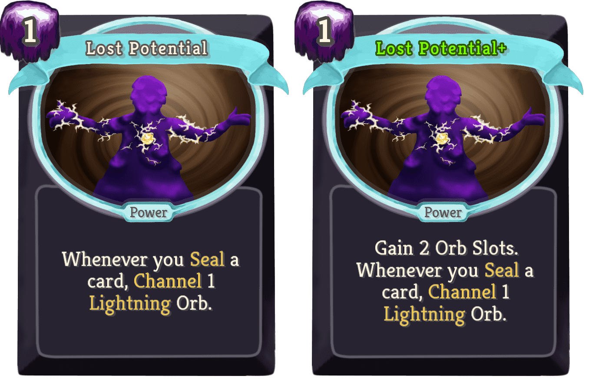 | Uncommon | Power | 1 | (Gain 2 Orb Slots.)Whenever you dregsmod:Seal a card, Channel 1 Lightning Orb. |
| Malediction | 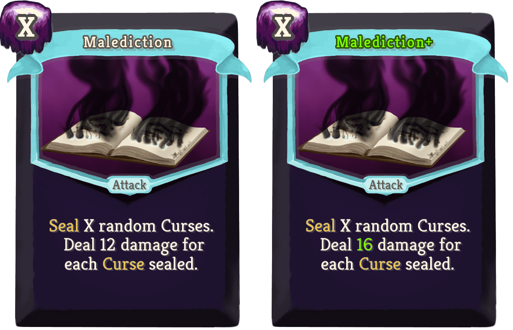 | Uncommon | Attack | X | dregsmod:Seal X random Curses. Deal 12 (16) damage for each Curse sealed. |
| Midnight Manacles |  | Uncommon | Skill | 1 | The target loses 6 (9) Strength this turn. |
| Misfortune |  | Uncommon | Attack | 2 | Deal 30 (40) damage. Can only be used if you're holding a Curse. |
| Obstruct | 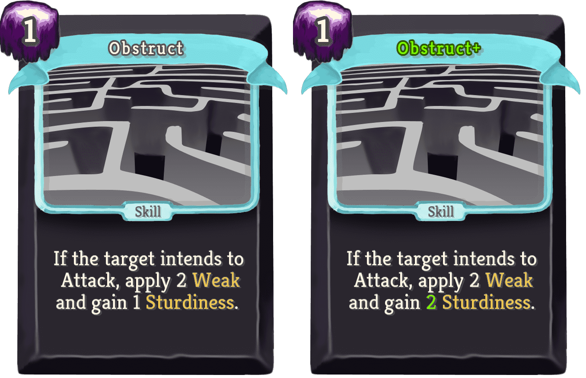 | Uncommon | Skill | 1 | If the target intends to Attack, apply 2 Weak and gain 1 (2) dregsmod:Sturdiness. |
| Pinprick |  | Uncommon | Skill | 1 | If you're holding a Curse, apply 2 Vulnerable and 5 Mark (to ALL enemies). ALL enemies lose HP equal to their Mark. |
| Rejection | 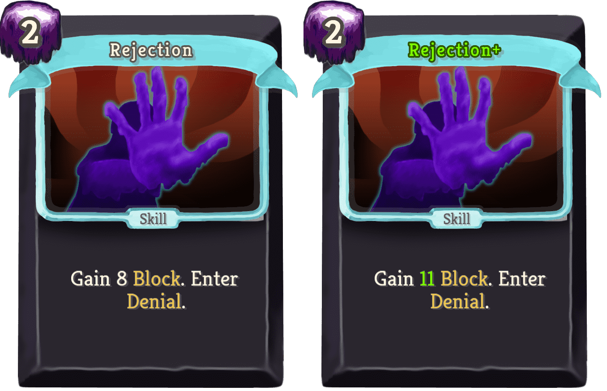 | Uncommon | Skill | 2 | Gain 8 (11) Block. Enter dregsmod:Denial. |
| Rite of Purification |  | Uncommon | Attack | 1 | Deal 7 (10) damage. Exhaust a card. If you exhaust a Curse, draw a card and return this to your hand. |
| Sarcophagus |  | Uncommon | Skill | 1 | Gain 10 (13) Block. dregsmod:Seal a card. |
| Scapegoat |  | Uncommon | Power | 1 | For each card you Exhaust or dregsmod:Seal, dregsmod:Awoken cards do 1 (2) more damage or Block. |
| Sealed Energy | 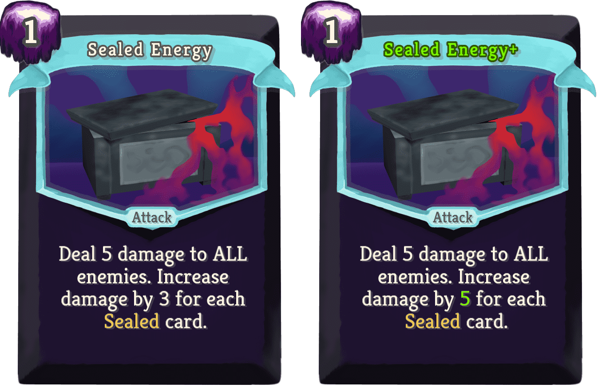 | Uncommon | Attack | 1 | Deal 5 damage to ALL enemies. Increase damage by 3 (5) for each dregsmod:Sealed card. |
| Sealing Wish |  | Uncommon | Attack | 1 | Deal 12 (16) damage to ALL enemies. dregsmod:Seal a random Curse. Exhaust |
| Shifting Sands | 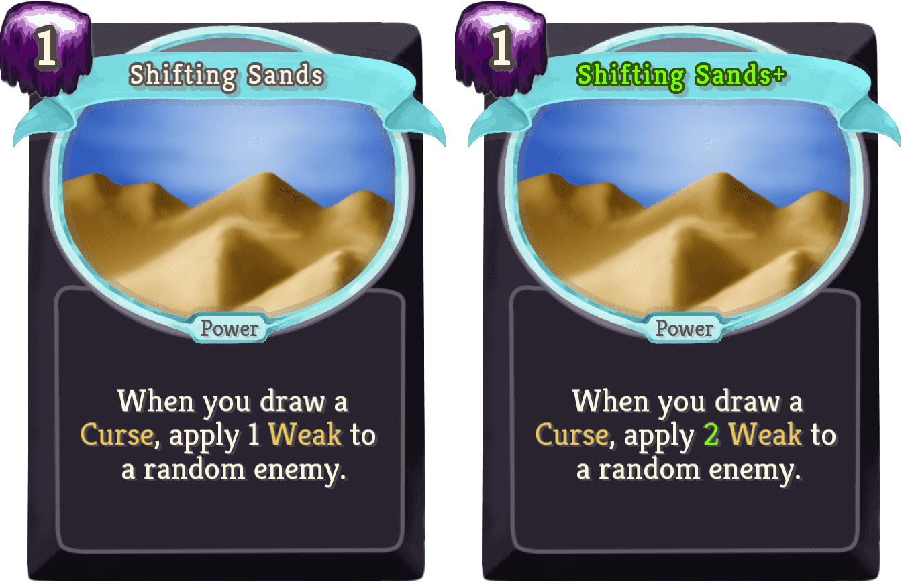 | Uncommon | Power | 1 | When you draw a Curse, apply 1 (2) Weak to a random enemy. |
| The Vault |  | Uncommon | Power | 1 (0) | When you discard a Curse, dregsmod:Seal it instead. |
| Torment |  | Uncommon | Skill | | Unplayable While this card is dregsmod:Sealed, gain [E] ([E]) each turn. |
| Unlucky | 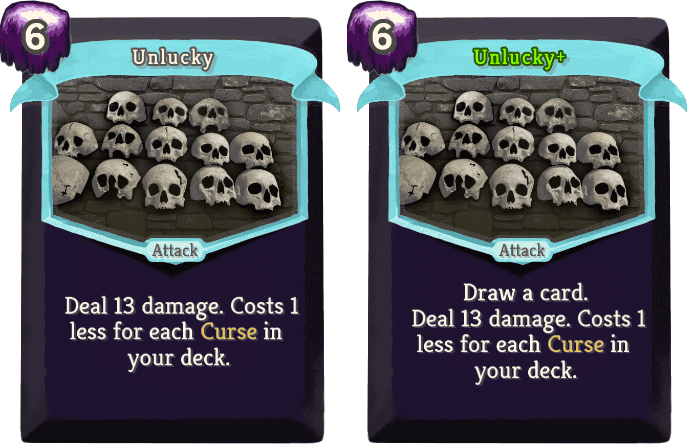 | Uncommon | Attack | 6 | (Draw a card.)Deal 13 damage. Costs 1 less for each Curse in your deck. |
| Wave of Darkness | 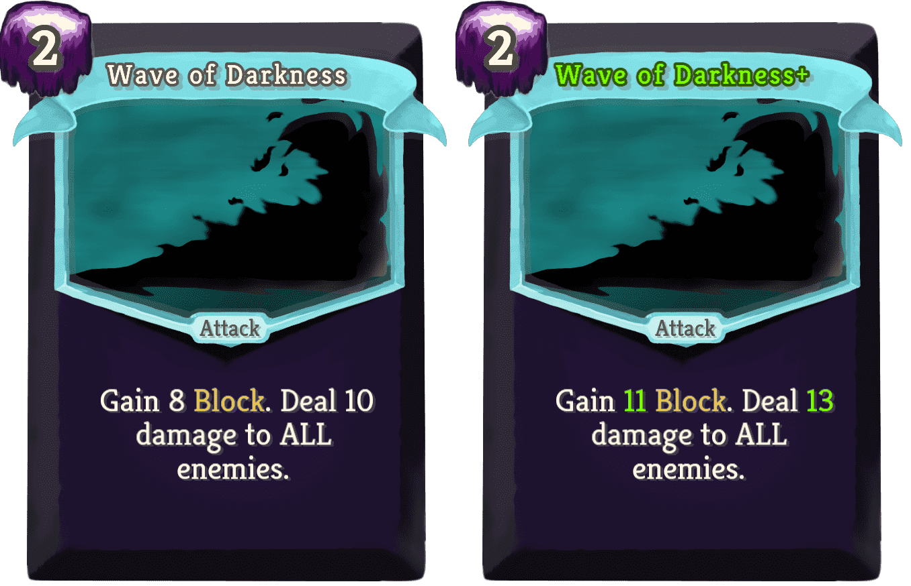 | Uncommon | Attack | 2 | Gain 8 (11) Block. Deal 10 (13) damage to ALL enemies. |
| Bad Omen | 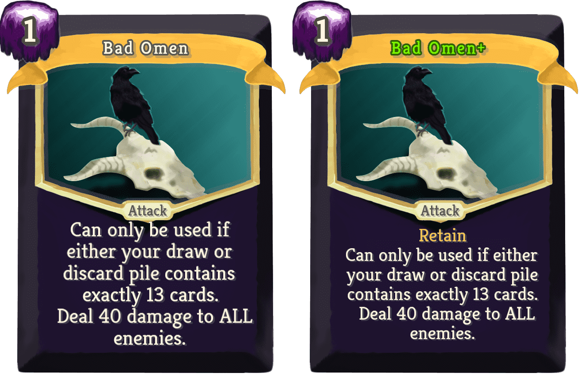 | Rare | Attack | 1 | (Retain)Can only be used if either your draw or discard pile contains exactly 13 cards. Deal 40 damage to ALL enemies. |
| Chaos Theory | 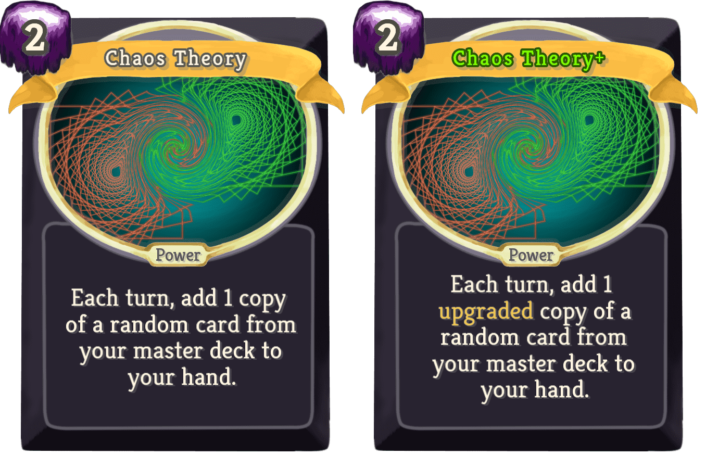 | Rare | Power | 2 | Each turn, add 1 (upgraded) copy of a random card from your master deck to your hand. |
| Eclipse Form | 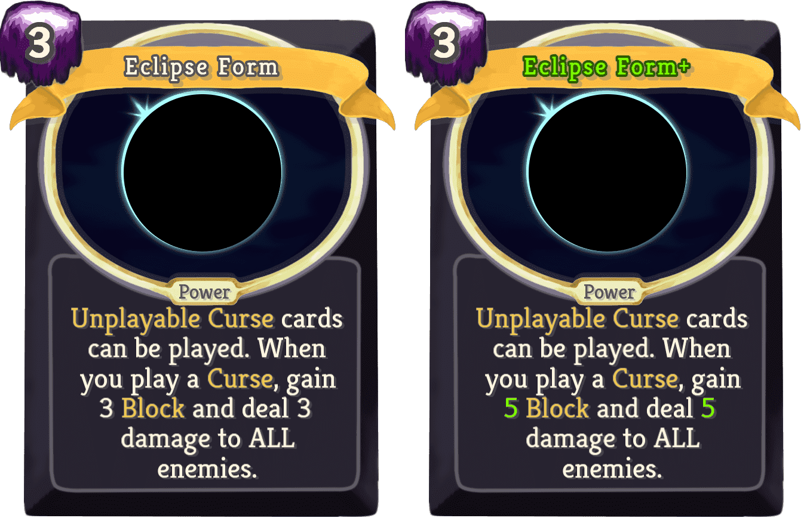 | Rare | Power | 3 | Unplayable Curse cards can be played. When you play a Curse, gain 3 (5) Block and deal 3 (5) damage to ALL enemies. |
| Entropy |  | Rare | Skill | | Unplayable While this card is dregsmod:Sealed, gain 12 (16) Block each turn. |
| Incantation | 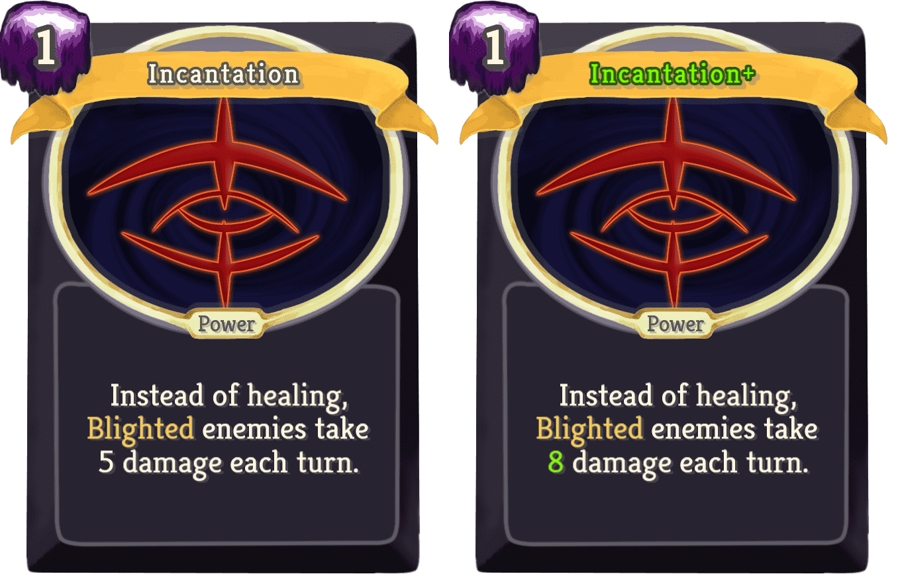 | Rare | Power | 1 | Instead of healing, dregsmod:Blighted enemies take 5 (8) damage each turn. |
| Indestructible |  | Rare | Skill | 2 | Gain 12 (18) Temporary HP. Exhaust |
| Kindle | 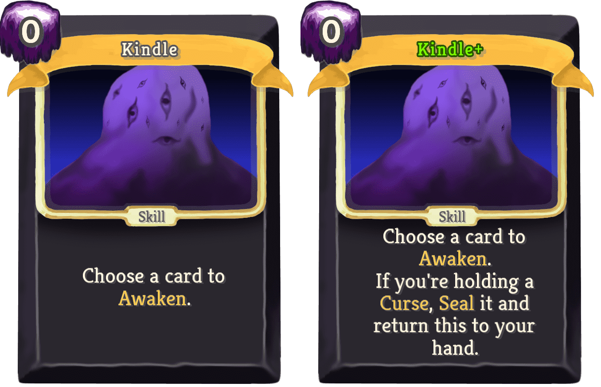 | Rare | Skill | 0 | Choose a card to dregsmod:Awaken.(If you're holding a Curse, dregsmod:Seal it and return this to your hand.) |
| Last Hope | 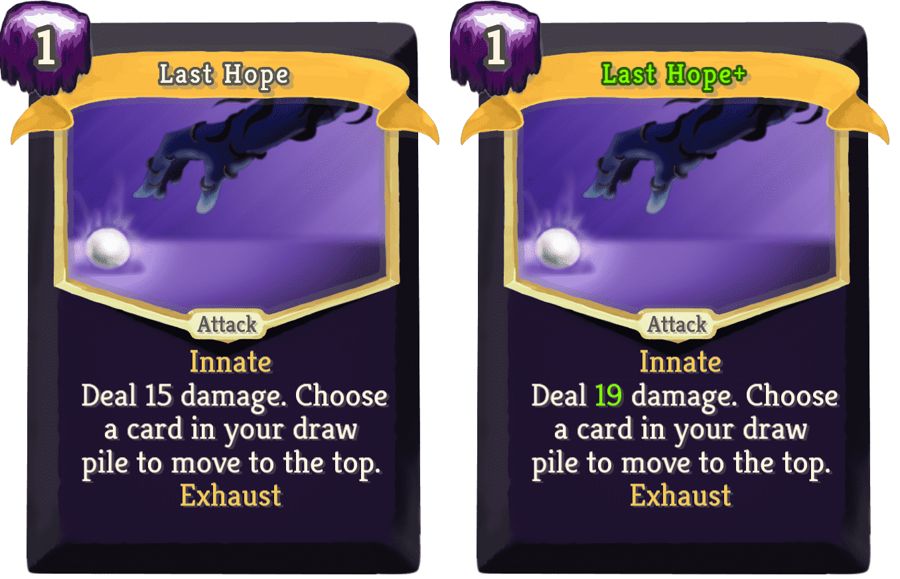 | Rare | Attack | 1 | Innate Deal 15 (19) damage. Choose a card in your draw pile to move to the top. Exhaust |
| Mean Look |  | Rare | Attack | 0 | Deal 6 damage. Double the target's dregsmod:Blighted. Exhaust (not Exhaust) |
| Overcome |  | Rare | Skill | X | Gain X dregsmod:Fortitude, dregsmod:Might, and (not and)dregsmod:Sturdiness (, and Strength). |
| Power Up |  | Rare | Attack | 1 | Deal 10 (14) damage. Gain 1 (2) dregsmod:Might. |
| Redemption |  | Rare | Attack | 2 | Deal 16 (20) damage. Fatal: Permanently remove a random Curse from your deck. Exhaust |
| Reincarnation |  | Rare | Skill | 3 | Gain 1 (2) Strength. Add 1 (2) Shiv(s) to your hand. Evoke once (twice). Add a (2) Miracle(s) to your hand. Exhaust |
| Retribution |  | Rare | Power | 1 | Each time you lose HP, your next attack deals 6 (9) additional damage. |
| Ritual | 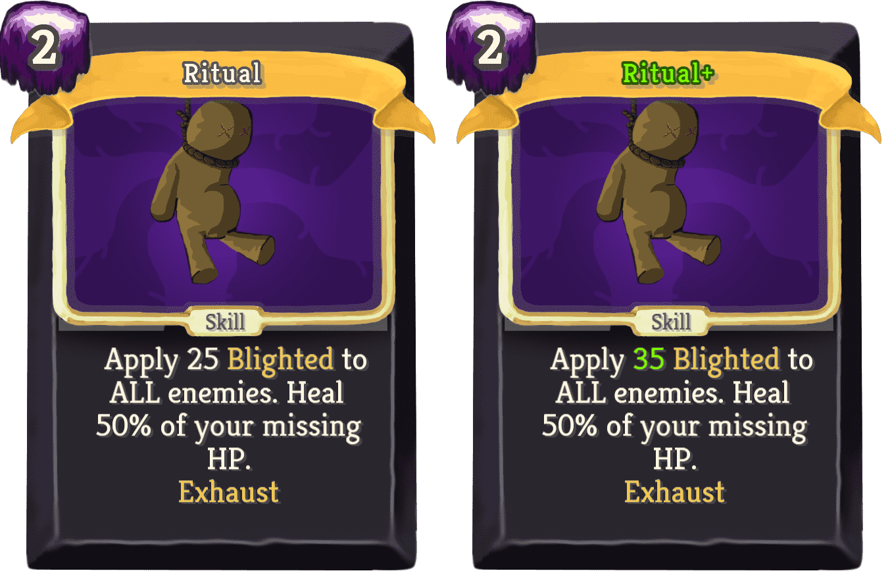 | Rare | Skill | 2 | Apply 25 (35) dregsmod:Blighted to ALL enemies. Heal 50% of your missing HP. Exhaust |
| See No Evil |  | Rare | Skill | 0 | dregsmod:Seal up to 10 of cards in your draw pile. Exhaust (not Exhaust) |
| Twilight |  | Rare | Attack | 3 | Deal 27 (39) damage to ALL enemies. |
| Vivification |  | Rare | Power | 2 | When you would take fatal damage, instead heal to 1/3 (1/2) HP and add a Curse to your deck. Works only once per combat. |
| Name | Image | Tier | Pool | Description | Flavor |
|---|
| Curse Brand | | Starter | Dregs_black_color | Whenever you draw a Curse, Awaken a random card. | This mark is reserved for the failed and fallen. |
| Darksteel Hammer | 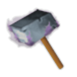 | Common | Dregs_black_color | Whenever you obtain a Curse,Upgrade a random card. | This blacksmith's tool is steeped in cursed energy. |
| Padlock | | Common | Dregs_black_color | At the beginning of each combat, you may Seal up to 5 cards from your draw pile. | This lock was once used to seal the cage of an evil force. |
| Banana Peel |  | Uncommon | Dregs_black_color | When you are inflicted with Weak, inflict 1 Weak on all enemies. | Covered in Go-Kart tracks. |
| Cursed Egg |  | Uncommon | Dregs_black_color | Cleansed Curse reward cards are Upgraded. | DO NOT EAT! |
| Jade Seal |  | Uncommon | Dregs_black_color | Whenever you Seal a card, gain 3 Block. | An ancient artifact from a forgotten empire. |
| Sticky Barb |  | Uncommon | Dregs_black_color | When you are inflicted with Vulnerable, inflict 1 Vulnerable on all enemies. | Impossible to remove from socks. |
| Cursed Locket |  | Rare | Dregs_black_color | Increase Blighted inflicted by 50%. | Sealed with dark energy, it burns to the touch. |
| Evil Eye | | Rare | Dregs_black_color | After each battle, heal 1 HP for each Curse remaining in your deck. | Likes to kick puppies. |
| Lucky Clover |  | Rare | Dregs_black_color | At the beginning of each combat, gain 1 Plated Armor for each unique curse in your deck. | It's magical and delightful. |
| Neow's Hatred |  | Special | Dregs_black_color | Whenever you enter a Rest Site, add a Curse that can be cleansed to your deck. | It feels like you were brought back just to fail. |
| Death Brand | | Boss | Dregs_black_color | Replaces Curse Brand. Whenever you draw a Curse, Awaken a random card in your hand. Draw an additional card each turn. | This brand marks its bearer for execution. |
| Fractured Prism | | Shop | Dregs_black_color | Choose a card in your deck. Your next 5 card rewards will include a copy of that card. | The cracked surface creates exactly 5 reflections. |
| Name | Description |
|---|
| Acceptance Stance | Your Attacks deal double damage but cost 1 more. |
| Asylum Orbs | Channels a different Orb depending on the rarity of the Sealed Card: Common: Lightning Uncommon: Frost Rare: Plasma Status: Sludge Curse: Dreg |
| Awaken | Awoken attacks deal more damage; awoken skills grant more Block or have more potent effects. A card can be Awakened more than once. |
| Awoken | Awoken attacks deal more damage; awoken skills grant more Block or have more potent effects. |
| Awoken II | Awoken attacks deal more damage; awoken skills grant more Block or have more potent effects. |
| Awoken III | Draw a card when played. Awoken attacks deal more damage; awoken skills grant more Block or have more potent effects. |
| Awoken IV | Recover HP and draw a card when played. Awoken attacks deal more damage; awoken skills grant more Block or have more potent effects. |
| Awoken IX | Recover HP and draw a card when played. Awoken attacks deal more damage; awoken skills grant more Block or have more potent effects. |
| Awoken V | Recover HP and draw a card when played. Awoken attacks deal more damage; awoken skills grant more Block or have more potent effects. |
| Awoken VI | Recover HP and draw a card when played. Awoken attacks deal more damage; awoken skills grant more Block or have more potent effects. |
| Awoken VII | Recover HP and draw a card when played. Awoken attacks deal more damage; awoken skills grant more Block or have more potent effects. |
| Awoken VIII | Recover HP and draw a card when played. Awoken attacks deal more damage; awoken skills grant more Block or have more potent effects. |
| Awoken X | Recover HP and draw a card when played. Awoken attacks deal more damage; awoken skills grant more Block or have more potent effects. |
| Blighted | When Blighted exceeds an enemy's current HP, it will be killed and transformed into a special curse that will be added to your deck. Blighted enemies will heal 10% of their missing HP each turn. |
| Cleanse | Some Curses can be Cleansed by fulfilling the condition on the card. When fulfilled, the curse can be replaced with your choice of card from another class. |
| Denial Stance | When entering this stance, gain [E] [E] . Exiting this stance ends your turn. |
| Dreg Orb | Orb: Draws curses each turn. When Evoked, Awakens a card. |
| Fortitude | Opposite of Vulnerable. Decreases damage taken by 25% |
| Might | Opposite of Weak. Increases damage dealt by 25% |
| Sealed | Sealed cards remain in the discard pile when you shuffle and are un-sealed. Sealing a card triggers any exhaust or discard effects listed on the card. |
| Sludge Orb | Orb: Increases potency each turn. When Evoked, draws cards. |
| Sturdiness | Opposite of Frail. Increases Block gained by 25% |
{kind=link}
{kind=link}
{kind=link}
{kind=link}
{kind=link}
{kind=link}
{kind=link}
{kind=link}
{kind=link}
{kind=link}
{kind=link}
{kind=link}
{kind=link}
{kind=link}
{kind=link}
{kind=link}
{kind=link}
{kind=link}
{kind=link}
{kind=link}
{kind=link}
{kind=link}
{kind=link}
{kind=link}
{kind=link}
{kind=link}
{kind=link}
{kind=link}
{kind=link}
{kind=link}
{kind=link}
{kind=link}
{kind=link}
{kind=link}
{kind=link}
{kind=link}
{kind=link}
{kind=link}
{kind=link}
{kind=link}